Lichenologist
Elise Lebreton, PhD

Scientific Collaborator, University of Liège, Belgium
Founder & Principal Investigator, LichenScope, France
About
I'm a biologist specialising in lichen-forming fungi. My work explores their diversity across spatial and temporal scales, focusing on patterns of diversification and distribution. To do so, I combine tropical fieldwork, integrative taxonomy, molecular phylogenetics and research on natural history collections.
▸ My activities span four closely connected areas:
-
Research:
I use lichens as model systems to address broader questions in evolutionary biology. → Explore my research
-
Biodiversity expertise:
I provide lichenological expertise to support biodiversity inventories and conservation. → Discover LichenScope
-
Collections:
I build and study herbarium collections, using them as resources for taxonomic, ecological and evolutionary research.
-
Knowledge sharing:
I share lichenological knowledge with researchers and the wider public.
My ambition is to pursue and develop this work within a research institution, such as a university or a natural history museum.
See my education and academic experience.
Why do lichens matter?


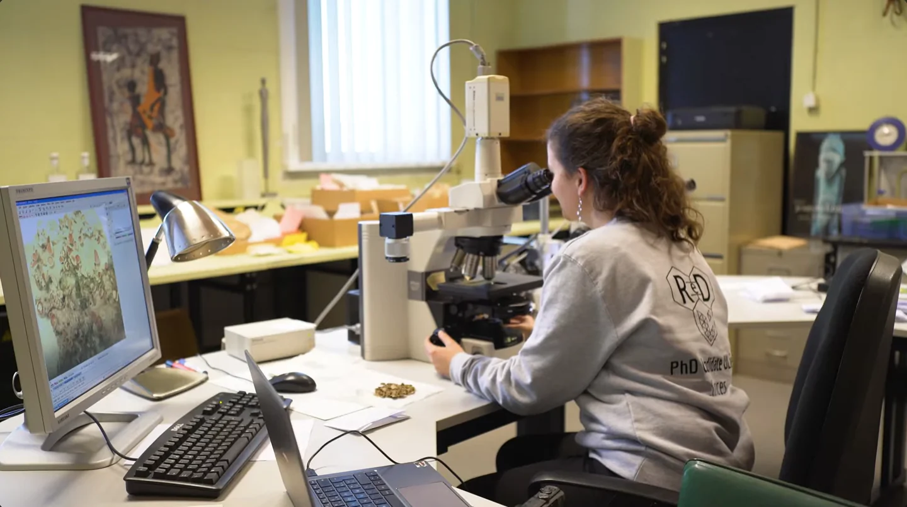

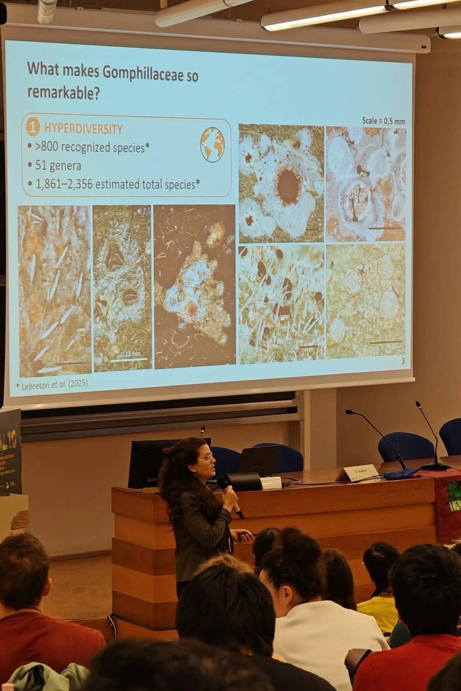
Selected publications
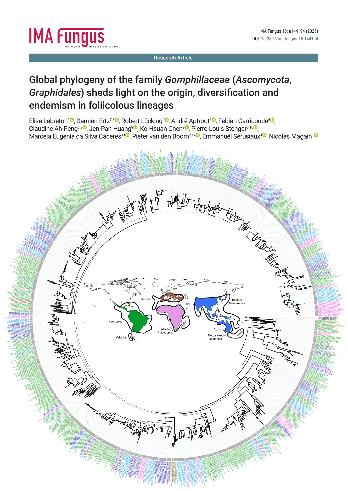
Gomphillaceae
Lebreton et al.
IMA Fungus · 2025
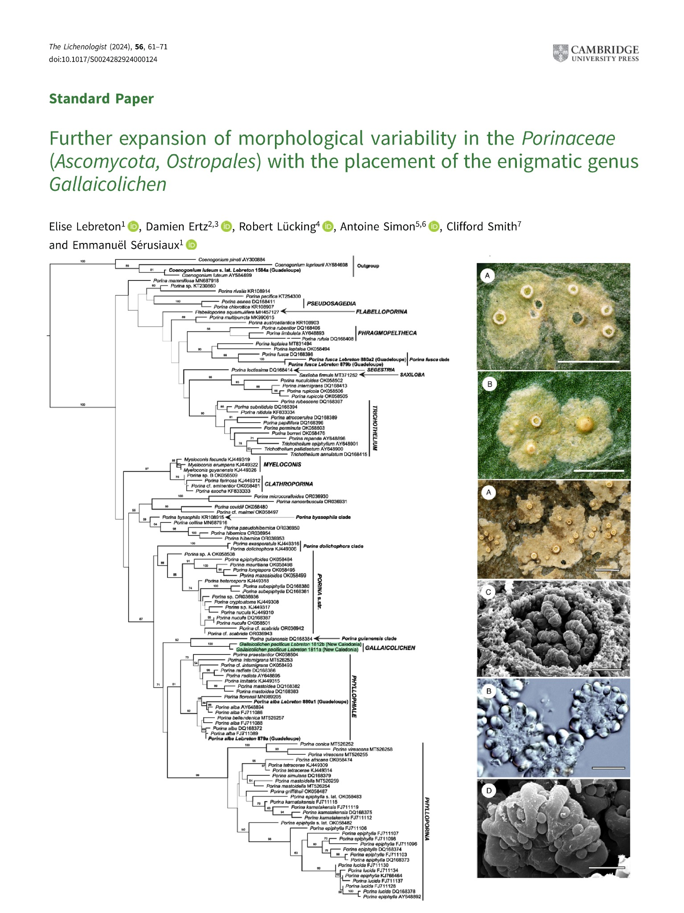
Gallaicolichen
Lebreton et al.
The Lichenologist · 2024
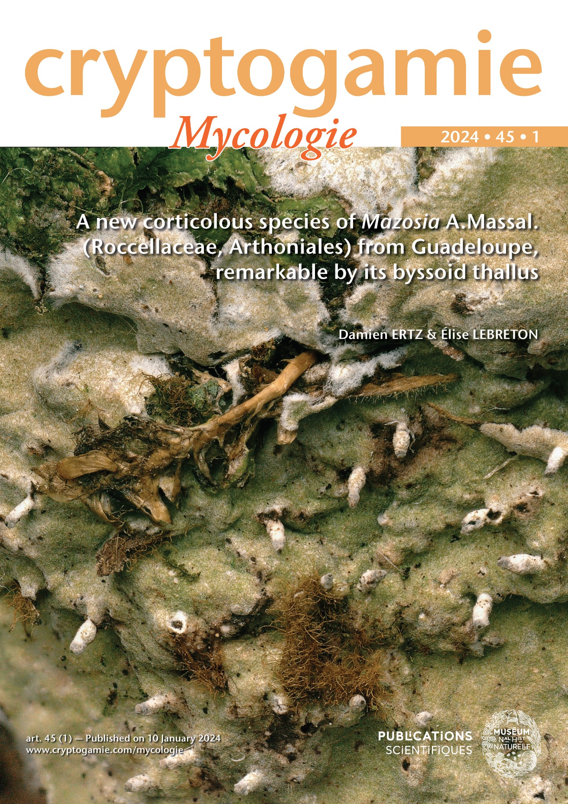
Mazosia byssoidea
Ertz & Lebreton
Cryptogamie, Mycologie · 2024
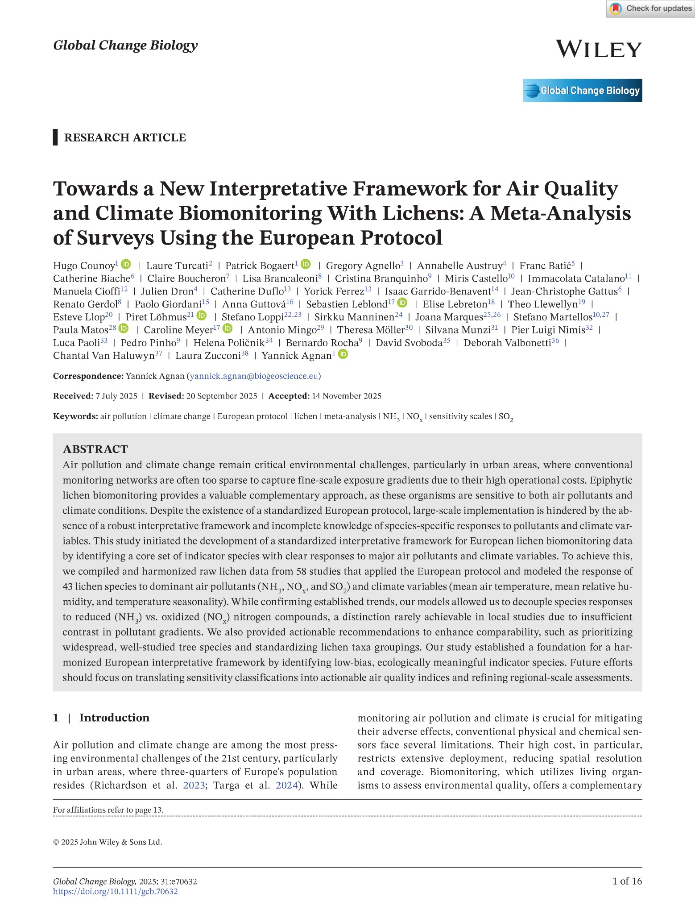
Lichen biomonitoring
Counoy et al.
Global Change Biology · 2025
Fieldwork


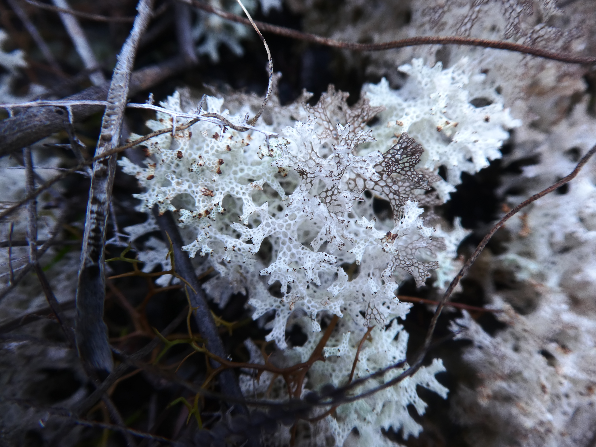
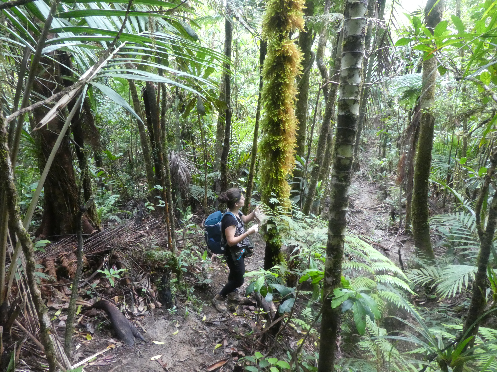
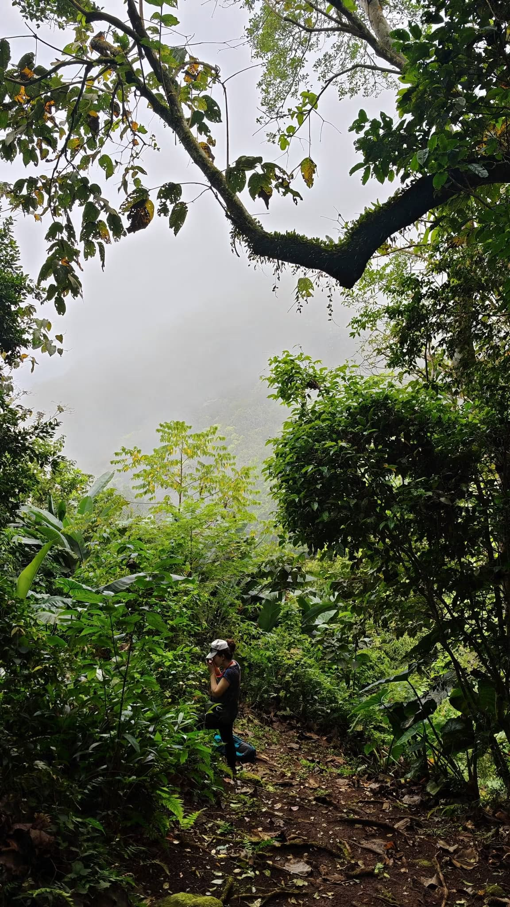
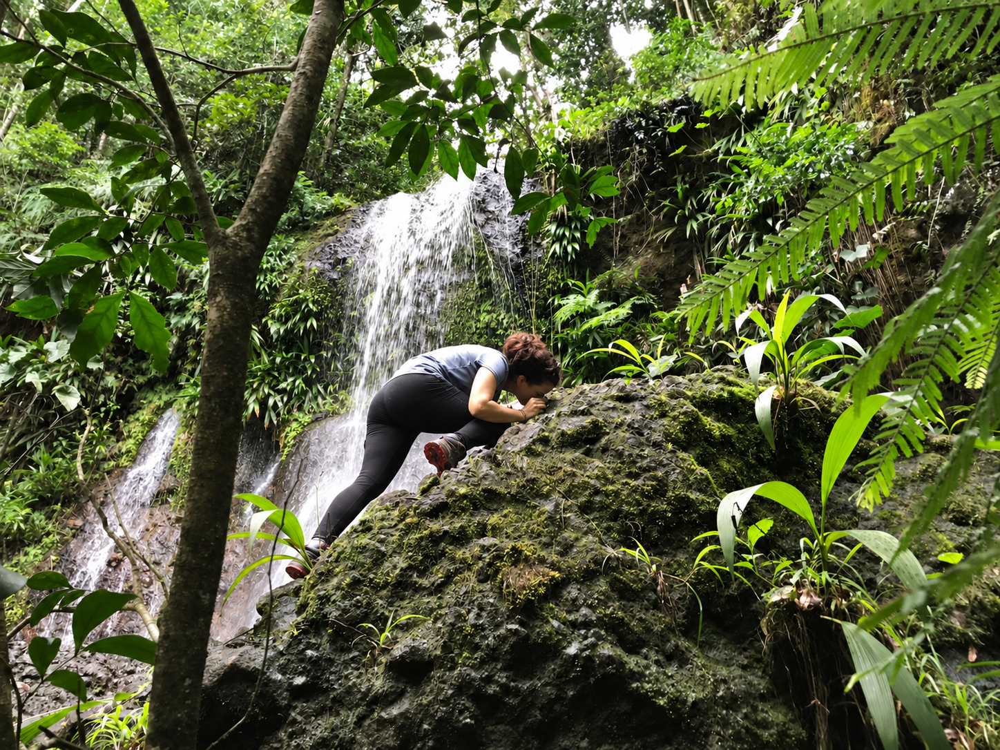

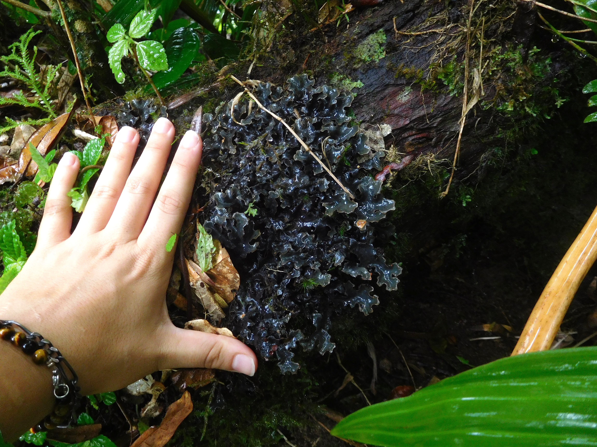
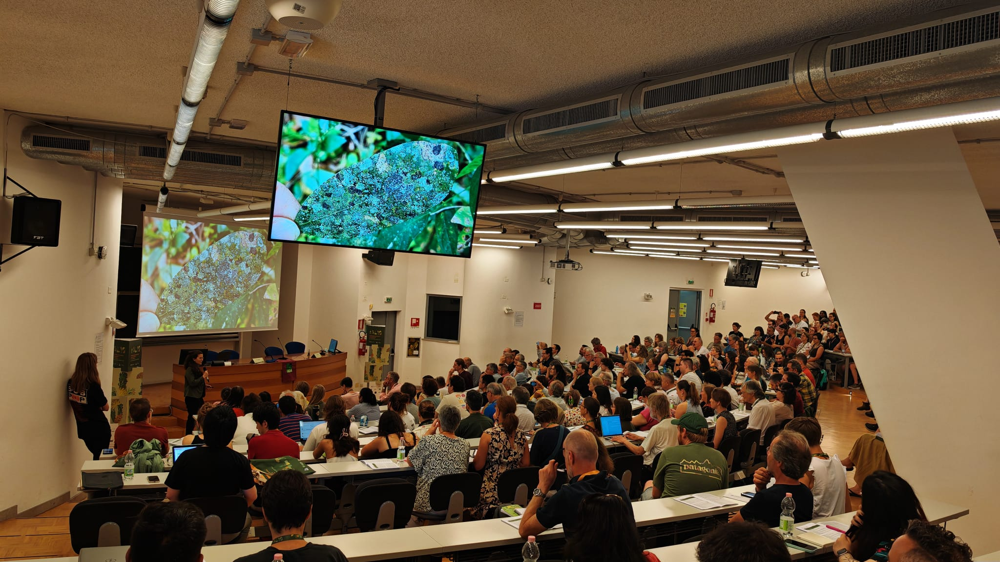


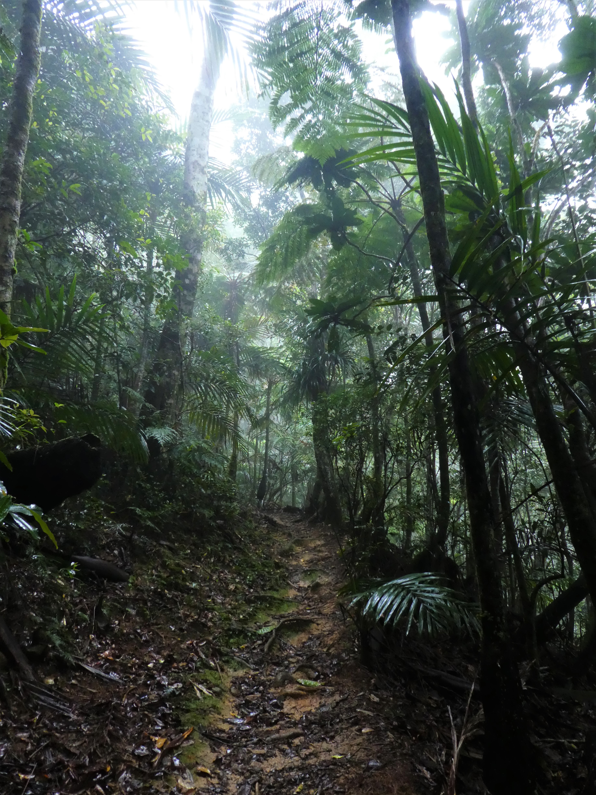
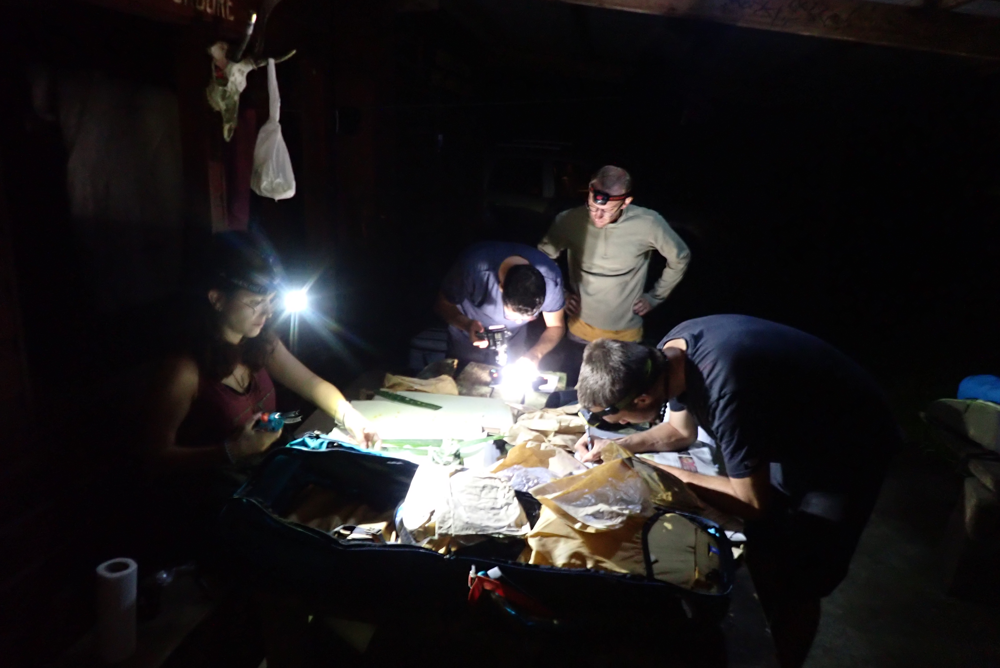
Distinctions
Recognition
Mason Hale Award — International Association for Lichenology (IAL)
Awarded for outstanding doctoral research in lichenology, presented at major IAL meetings.
2026Adjudant Hubert Lefebvre Prize — Royal Academy of Belgium, Class of Sciences
Triennial European prize recognizing original research in botany.
Both awarded for my PhD thesis Life on Leaves: Biogeography, Evolution and Photobiont Interactions in Gomphillaceae.

Latest
Recent entries
French Guiana field expedition confirmed!
I'll be heading to French Guiana in April 2027 for a lichen inventory.
Mason Hale Award at IAL10
I'm back from the 10th International Lichenological Symposium in Trieste (Italy), where I was able to present my research thanks to an IAL mobility grant. On 30 July, I received the prestigious Mason Hale Award from the International Association for Lichenology for my doctoral research. A huge thank you to the IAL for its support!
Proposal to conserve the name Gomphillaceae published in TAXON
With Robert Lücking — a nomenclatural landmark for the family. Read the paper ↗